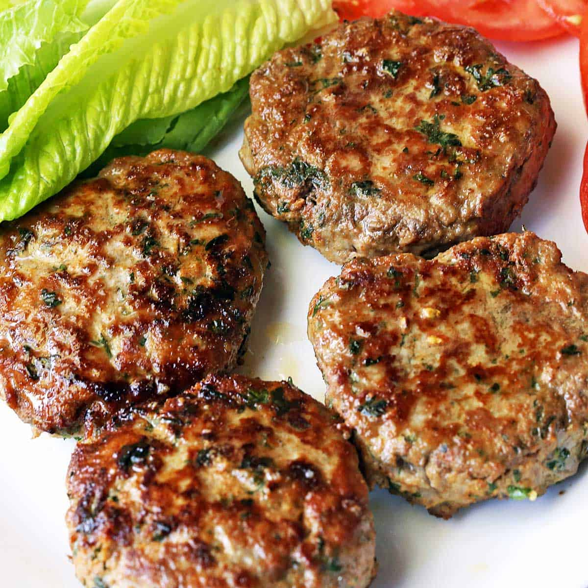

Turkey Burgers

Description
These turkey burgers are delicious and super easy/quick to make.
They are perfect for a weeknight meal, and you can make enough for a
few days of leftovers.
Ingredients
- 1.3lbs ground turkey
- olive oil
- 3 cloves garlic
- 1/2 shallot
- parsley
- salt
- pepper
- 1 Tbsp worcestershire sauce
- dash of liquid smoke
Steps
- Mince/chop the garlic cloves, shallot, and parsley
- Add to the ground turkey alongside some olive oil, salt, pepper, worcestershire sauce, and liquid smoke
- Combine all ingredients thoroughly and make 4 evenly-sized patties
- Heat up a cast iron skillet on med high until hot and add a bit of olive oil to it
- Add the patties to the skillet and cook on each side for about 5 minutes
- Serve on a roll with lettuce, tomato, and whatever other toppings and condiments